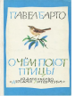

О чем поют птицы

Книга является своеобразной поэтической энциклопедией птиц, в которой поэзия сочетается с биологической точностью художественных птичьих портретов. Большую самостоятельную ценность представляют собой также и цветные иллюстрации Никиты Чарушина.